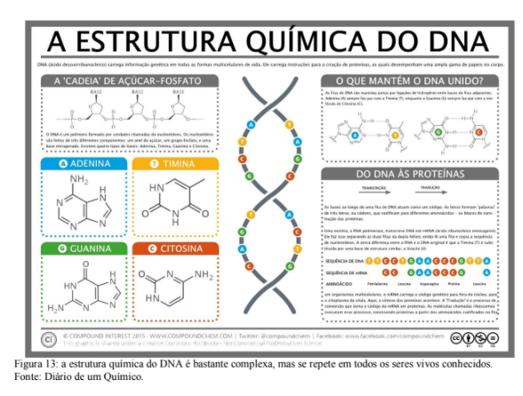
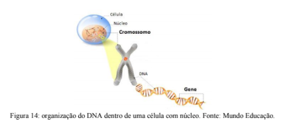
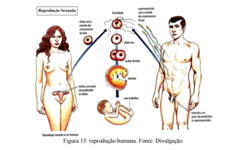
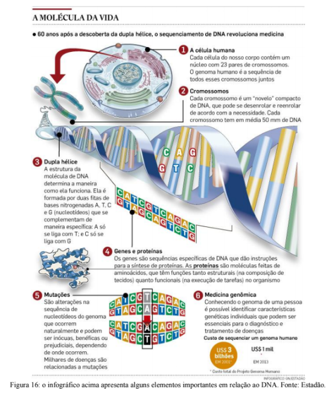
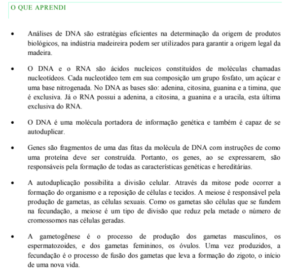

Capítulo 2
INDÚSTRIA MADEIREIRA: RECONHECIMENTO DE ORIGEM POR ANÁLISE DE DNA
QuestãoVocê já se perguntou como uma análise de DNA pode informar sobre a procedência de uma madeira?
ContextualizandoA extração de madeira deve seguir uma série de normas para garantir a preservação de florestas e, consequentemente, manter os estoques de matéria-prima. A garantia de origem é a forma que muitas indústrias madeireiras encontraram para comprovar que a madeira utilizada não foi retirada ilegalmente.
Quando os órgãos ambientais fiscalizam uma carga de madeira, é bastante difícil ter certeza do local de onde as árvores foram retiradas e não é raro que pessoas falsifiquem documentos para esconder o corte ilegal. Nesse caso, análises genéticas podem atestar a origem.
Isso é possível, pois todos os seres vivos compartilham características em comum. A principal delas é o DNA (ácido desoxirribonucleico). Toda a vida conhecida se baseia nessa molécula, que é também uma grande evidência da ancestralidade comum no planeta. Bactérias, alguns vírus, animais, fungos e plantas estocam informação no DNA que possui a mesma composição e utiliza o mesmo código, o que varia é o tamanho, sequência e organização dessa molécula.
Quanto maior o parentesco entre dois indivíduos mais semelhantes são suas moléculas de DNA. Essa, por exemplo, é a lógica por traz de um teste de paternidade e por traz da certificação de origem por métodos genéticos.
Um fiscal ambiental que não tenha segurança da origem legal de produtos de madeira pode recolher uma amostra que contenha DNA e, a partir da sequência genética, identificar de qual população ela veio. Técnicas forenses como essa são essenciais na resolução de crimes, por exemplo, pois funcionam em qualquer situação onde houver DNA envolvido.
(RE)CONSTRUINDO CONHECIMENTOSDNA E RNA
Genética é a parte da Biologia que pesquisa como se dá a transmissão das informações genéticas. Esse estudo teve grande avanço, a partir de 1953, com as descobertas de Watson e Crick sobre a estrutura dos ácidos nucleicos.
Hoje, toda a pesquisa ligada à engenharia genética se baseia nesses conhecimentos. Os ácidos nucléicos, são o DNA (ácido desoxirribonucleico) e o RNA (ácido ribonucleico). Funcionam como fitas que armazenam instruções programadas. Estas instruções nada mais são do que os genes, responsáveis pela determinação e transmissão das características hereditárias de todos os seres vivos. Os ácidos nucleicos são formados pela união de um grande número de unidades químicas e estruturais chamadas nucleotídeos. O DNA e o RNA são, portanto, cadeias de nucleotídeos (figura 13).
Tanto o DNA como o RNA são macromoléculas (moléculas muito grandes) constituídas por algumas centenas ou milhares de nucleotídeos. Cada nucleotídeo é constituído de três partes: um grupo fosfato, ligado a uma pentose (açúcar de 5 carbonos), que, por sua vez, está ligado a uma base orgânica nitrogenada.
Uma molécula de ácido nucléico é, portanto, uma longa cadeia de nucleotídeos ligados entre si pelos seus grupos fosfato, sendo que o fosfato de cada nucleotídeo se liga ao açúcar do nucleotídeo vizinho.
Nos nucleotídeos do DNA, o açúcar presente é sempre uma pentose chamada desoxirribose; nos nucleotídeos de RNA, a pentose é a ribose.
UMA PAUSA PARA PENSAR
O DNA não executa nenhuma função dentro da célula, na realidade ele funciona como um enorme livro de receitas.
As células eucariontes (de plantas e animais,por exemplo) tem um compartimento chamado núcleo onde o DNA fica guardado. O cromossomo é uma forma de organização que funciona como um novelo de lã, ele enrola a molécula de DNA de uma forma organizada, caso contrário o DNA não caberia dentro da célula. O DNA é uma grande molécula composta por duas fitas que se ligam uma a outra formando um espiral (figura 14).
Essas fitas são construídas a partir da união de pequenos blocos (os nucleotídeos). A ordem na qual os nucleotídeos estão organizados forma um código. Esse código genético é a informação de como construir uma molécula de RNA. O RNA, por sua vez, será lido para a produção de uma proteína. Ou seja, ao longo da molécula de DNA estão gravadas através do código genético todas as informações sobre como executar as funções na célula.
Gene é uma porção de DNA que contém a informação, sob forma de código, que irá determinar a formação de uma proteína. Esta proteína é que agir e definir uma dada característica do organismo. Portanto, os genes são as estruturas responsáveis pela transmissão hereditária das características biológicas de uma geração para outra.
Por ser capaz de se duplicar, o DNA possibilita a duplicação dos genes e das células. A divisão celular por mitose pode formar um organismo inteiro, reparar parte de um tecido, promover a manutenção do número de células em um adulto. Já a divisão por meiose possibilita a produção de células sexuais que, através da fecundação, formam uma nova vida em organismos sexuados.
Sempre que há a divisão celular há a duplicação do material genético, ou seja, é feita uma cópia do DNA. Agora imagine copiar um livro todo a mão, podem acontecer pequenos erros que passam despercebidos, não é mesmo? Na duplicação do DNA não é diferente. Quando acontece um erro este pode ser corrigido (caso seja percebido a tempo) ou permanecer, nesse caso passa a ser chamado de mutação.
Essas mudanças (mutações) podem acontecer tanto em células do corpo quanto nas células germinativas (envolvidas na reprodução). Nesse último caso, a mutação é passada adiante ao longo das gerações e dizemos que é uma característica hereditária.
PARA ENTENDER MAIS...
A gametogênese é o processo de formação dos gametas a partir das células germinativas (figura 15). No homem, a gametogênese chama-se espermatogênese (forma o espermatozoide) e na mulher ovulogênese (forma o óvulo). A gametogênese feminina apresenta as mesmas etapas básicas, porém com uma grande diferença quanto ao período de desenvolvimento e ao número de gametas viáveis formados.
O espermatozoide possui uma bolsa repleta de enzimas, o acrossomo, que perfura os envoltórios ovulares e permite a fecundação. O núcleo do espermatozoide penetra no citoplasma do óvulo, onde passa a ser denominado pronúcleo masculino. O núcleo do óvulo, então chamado pronúcleo feminino, funde-se com o pronúcleo masculino e origina o núcleo de fecundação do zigoto. A união dos pronúcleos é a cariogamia (do grego karya, núcleo, e gámos, casamento, união). Surge assim o zigoto, que inicia imediatamente a mitose, pela qual originará as células do novo organismo.
AÇÃO E REFLEXÃO
No início dos anos 2000 a sociedade acreditava que o sequenciamento de todo o genoma seria a resposta e solução para todos os problemas humanos. Não foi bem assim.
Ao contrário do que se imaginava, a ação dos genes é influenciada por inúmeras variáveis do ambiente. Uma pessoa pode ter uma mutação relacionada a diabetes e nunca desenvolver a doença por manter uma rotina saudável. O "mundo do DNA" é muito mais complexo do que imaginávamos (figura 16).
O anseio por entender melhor os mecanismos genéticos levou ao desenvolvimento de tecnologias cada vez mais acessíveis. Testes de paternidade que custavam em média dez mil reais na década de 1990, já custam menos de quinhentos reais com prazos de entrega cada vez menores.
Tendo em mente esse cenário, você acha que a popularização das ferramentas genéticas são positivas para a sociedade? Como isso contribui para a questão apresentada no início do capítulo?
